2 Probabilities
Probability is introduced to deal with uncertainty.
Given a model, parameter uncertainty can be solved with more data. This is related to the concept of “degree of freedom”.
But model is always limiting, and sometimes somewhat arbitrary. This introduces model uncertainty. We can build more complex models, but there is no “solving” the problem, because real word data is always more complex than any model we can build.
Probability theory is easy, because there are, in total, only two rules.
Probability is a Lebesgue measure defined on the sample space. It’s defined on sets, which are not easy to manipulate. So for simple spaces we introduce the concept of densities, the integral of which will be the probability. One most common density is the Gaussian.
When transforming probability distributions, our goal is to keep the probability mass of a certain set consistent, not the density (remember density itself has no significance in probability, it’s only a tool for constructing probability masses). For this reason we need to compensate for the space transformation (using the Jacobian) when transforming the density.
Information is a formal way to describe the “surprise” we might expect from a random event. Starting from one event, the concept is then extended to one, or even multiple distributions.
Bayesian statistics (sometimes also called Laplacian statistics by source of contribution, and some other times also called inverse probability by way of calculation), is the rigorous application of probability theory to all aspects of statistical modeling. As such every element in Bayesian statistics is associated with a certain probability computation. In this book we won’t systematically cover Bayesian statistics, because the rigorous Bayesian treatment of every aspect of very deep neural networks (the focus of this book) is simply computationally infeasible. However elements of Bayesian statistics will manifest here and there, in all corners of deep learning.
2.1 The rules of probability
uncertainty: collect more data; use a more capable model 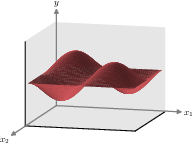 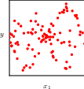 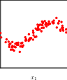
probability as frequency:
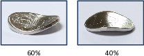
2.1.1 A medical screening example
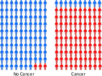
2.1.2 The sum and product rules
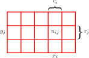
2.1.3 Bayes’ theorem
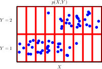 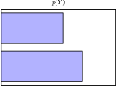 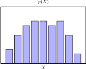 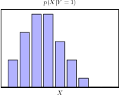
2.1.4 Medical screening revisited
2.1.5 Prior and posterior probabilities
2.1.6 Independent variables
2.2 Probability densities
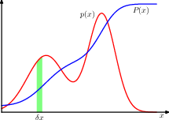
2.2.1 Example distributions
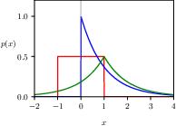
2.2.2 Expectations and covariances
2.3 The Gaussian distribution
\[ \mathcal{N}(x | \mu, \sigma^2) = \frac{1}{(2\pi\sigma^2)^{1/2}} \exp \left\{ -\frac{1}{2\sigma^2} (x - \mu)^2 \right\} \]
2.3.1 Mean and variance
2.3.2 Likelihood function
2.3.3 Bias of maximum likelihood
2.3.4 Linear regression
2.4 Transformation of densities
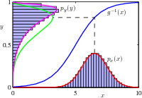
2.4.1 Multivariate distributions
2.5 Information theory
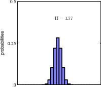 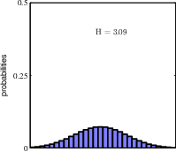
the broader distribution has a higher entropy. A uniform distribution would have the largest entropy.
2.5.1 Entropy
2.5.2 Physics perspective
2.5.3 Differential entropy
2.5.4 Maximum entropy
2.5.5 Kullback–Leibler divergence
2.5.6 Conditional entropy
2.5.7 Mutual information
2.6 Bayesian probabilities
more general, probability as measure of uncertainty
2.6.1 Model parameters
using probability to model parameter uncertainty, and update the probability distribution with data.
2.6.2 Regularization
using the rules of probability, we can establish a connection between MAP and ML estimation, and see that MAP is in fact a regularised ML estimation.
2.6.3 Bayesian machine learning
from parameter uncertainty to outcome uncertainty